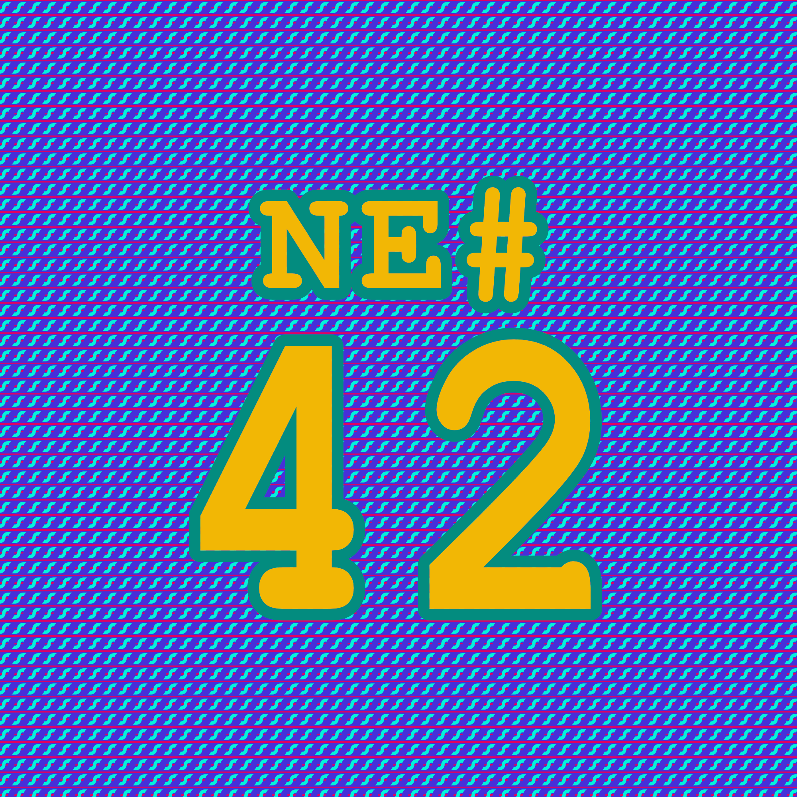
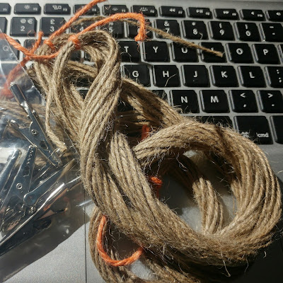

Die Nerd Enzyklopädie 42 - Mit einem nassen Seil ins Internet
Mit einem nassen Seil ins Internet

Nerd-Enzyklopädie #42
Um Breitband-Internet in die Wohnungen und Büros zu bekommen, wird viel Aufwand betrieben und am Ende beschweren sich die Kunden trotzdem. Als Internet-Provider hat man es wahrlich nicht leicht.
Kupferkabel, Glasfaserleitungen oder große Satelliten-Anlagen sind den meisten von uns ein Begriff. Aber es geht auch günstiger: Einem Techniker des Internet-Anbieters Andrew & Arnolds aus dem Vereinigten Königreich ist es gelungen, ein nasses Seil als Übertragungsmedium zu nutzen. Über eine Entfernung von 2 Metern erreichte er so eine Übertragungsgeschwindigkeit von 3,5 MBit/Sekunde! Reicht für die Prokrastination!

Nasses Seil [REVK1]